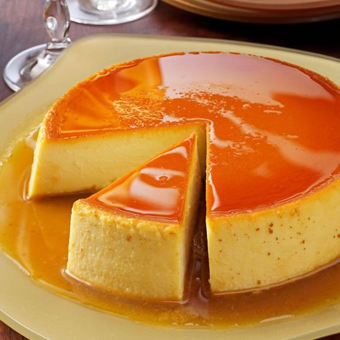

FEATURED RECIPES
MAINCOURSE

CHICKEN POCHERO
INGREDIENTS:
- ▢2 lbs. Chicken cut into serving pieces
- ▢1 piece Knorr Chicken Cube
- ▢2 pieces potato cubed
- ▢2 bunches baby bok choy
- ▢½ head cabbage sliced
- ▢8 ounces tomato sauce
- ▢18 pieces long green beans
- ▢2 pieces Chorizo de Bilbao sliced
- 8 ounces chick pea
- ▢3 pieces Saba banana sliced
- ▢2 pieces tomato diced
- ▢1 piece onion chopped
- ▢4 cloves garlic crushed
- ▢2 cups water
- ▢3 tablespoons cooking oil
- ▢Fish sauce and crushed peppercorn to taste
INSTRUCTIONS:
- Heat oil in a cooking pot. Pan-fry the chicken for 2 minutes per side. Set aside.
- Using the remaining oil, saute onion and garlic.
- Add chorizo. Saute for 1 minute.
- Add tomato. Continue to saute until onion and tomato softens.
- Put the pan-fried chicken back into the pot. Stir
- Pour tomato sauce and water.Let boil.
- Add Knorr Chicken Cube. Stir and cover the pot. Cook in medium heat for 15 minutes
- Put potato, saba banana, and chick pea into the pot. Cover and cook for 12 minutes.
- Add long green beans and cabbage. Cover and cook for 3 minutes.
- Add bok choy. Cook for 2 minutes. Season with crushed peppercorn and fish sauce. Stir.
- Tranfer to a serving bowl. Share and enjoy!
DESSERT

LECHE FLAN
INGREDIENTS:
- ▢10 pieces eggs
- ▢1 can condensed milk (14 oz)
- ▢1 cup fresh milk or evaporated milk
- ▢1 cup granulated sugar
- ▢1 cup granulated sugar
INSTRUCTIONS:
- Using all the eggs, separate the yolk from the egg white (only egg yolks will be used).
- Place the egg yolks in a big bowl then beat them using a fork or an egg beater
- Add the condensed milk and mix thoroughly
- Put the mold (llanera) on top of the stove and heat using low fire
- Put-in the granulated sugar on the mold and mix thoroughly until the solid sugar turns into liquid (caramel) having a light brown color.
- Note: Sometimes it is hard to find a Llanera (Traditional flan mold) depending on your location. I find it more convenient to use individual Round Pans in making leche flan.
- Spread the caramel (liquid sugar) evenly on the flat side of the mold Wait for 5 minutes then pour the egg yolk and milk mixture on the mold
- Cover the top of the mold using an Aluminum foil
- Steam the mold with egg and milk mixture for 30 to 35 minutes
- After steaming, let the temperature cool down then refrigerate Serve for dessert. Share and Enjoy!
COMFORT FOOD

BULALO
INGREDIENTS:
- ▢2 lbs beef shank
- ▢½ cabbage whole leaf individually detached
- ▢1 bundle bok choy
- ▢2 cobs corn each cut into 3 parts
- ▢2 Tablespoons whole peppercorn
- ▢1/2 cup green onions cut unto 1 1/2 inch pieces
- ▢1 onion
- ▢34 ounces water
- ▢fish sauce to taste optional
INSTRUUCTIONS:
- In a big cooking pot, pour in water and bring to a boil
- Put-in the beef shank followed by the onion and whole pepper corn then simmer for 1.5 hours (30 mins if using a pressure cooker) or until meat is tender.
- Add the corn and simmer for another 10 minutes
- Add the fish sauce,cabbage, pechay, and green onion (onion leeks)Serve hot. Share and Enjoy!